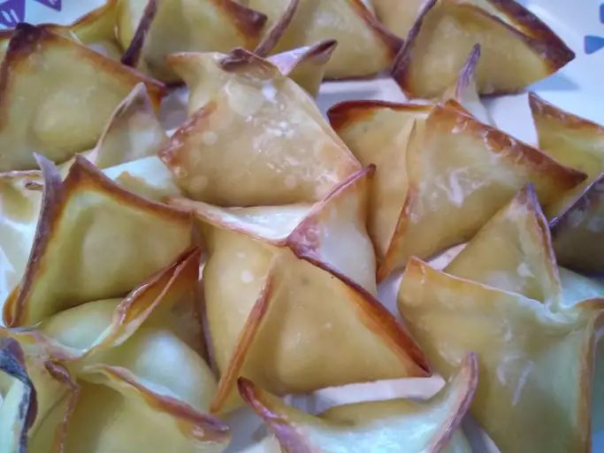

Crab Rangoons

Description
This crab Rangoon is said to be the closest to the Rangoon served at a certain
Asian food chain. This favorite appetizer can also be deep-fried instead of
baked.
Ingredients
- cooking spray
- 1 (8 ounce) package cream cheese
- 1 (6 ounce) can crabmeat, drained and flaked
- 2 green onions with tops, thinly sliced
- 1 clove garlic, minced
- 2 teaspoons Worcestershire sauce
- ½ teaspoon light soy sauce
- 48 wonton wrappers
Steps
- Preheat the oven to 425 degrees F (220 degrees C). Lightly spray a baking sheet
with cooking spray.
- Combine cream cheese, crabmeat, green onions, garlic, Worcestershire sauce,
and soy sauce together in a bowl.
- To prevent wonton wrappers from drying, prepare only one or two Rangoon at a
time, keeping the other wrappers under a damp towel. Place 1 teaspoon crab
filling onto the center of each wonton wrapper. Moisten edges with water and
fold wrapper diagonally to form a triangle, pressing edges to seal and pressing
out any air pockets. Moisten one of the bottom corners. Create a crown by
pulling both bottom corners together and sealing. Repeat with remaining
wonton wrappers and crab filling.
- Arrange Rangoon on the baking sheet and lightly spray with cooking spray.
- Bake in the preheated oven until golden brown, 12 to 15 minutes.